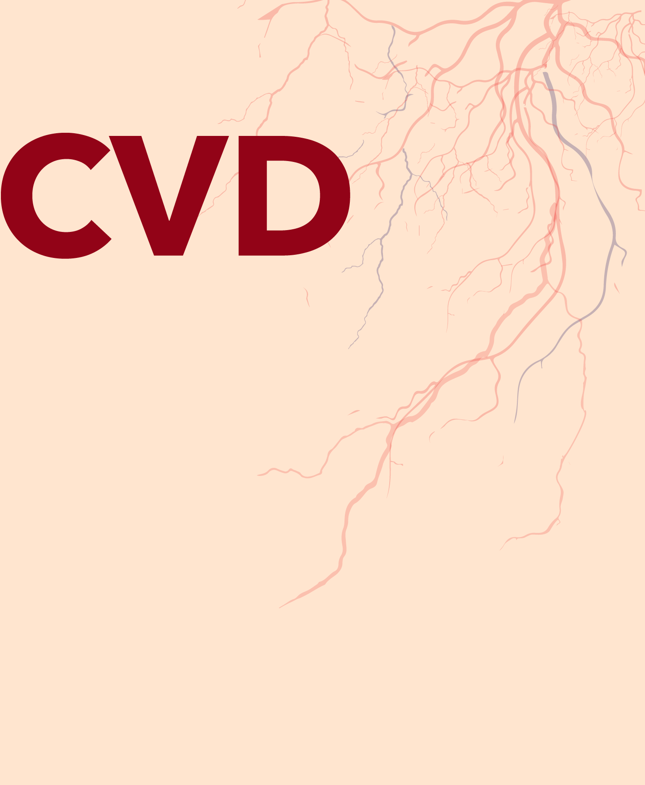

600px * 280px

small
420px *
320px

mobile
300px *
360px

World’s no.1 killer
Cardiovascular Disease
Cardiovascular disease (heart disease) refers
to a group of diseases that affect the heart and
blood vessels of your body.
1 IN 3
CVD deaths occur prematurely in
people under 70 years of age
>75%
of CVD deaths occur in
low- and middle-income countries
85%
of CVD deaths are due to
heart attack and stroke